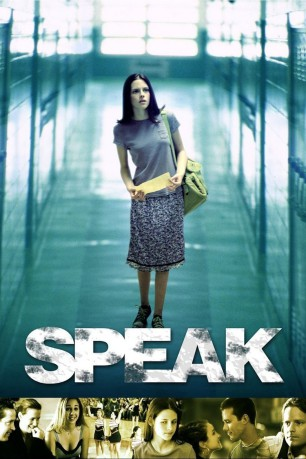

#1957 Speak
 
 IMDB-Wertung: 7.3 / 10
IMDB-Wertung: 7.3 / 10  Metascore: 0
Metascore: 0 
Melinda wird in den Sommerferien auf der Party einer Freundin vergewaltigt. Völlig kopflos ruft sie die Polizei, kann sich aus dem Schock heraus aber nicht mitteilen. Die Polizei kommt und die Party wird abgebrochen. Ihre Freunde wenden sich daraufhin nun von Melinda ab. Melinda, völlig verunsichert, schweigt seitdem und teilt sich niemandem mit. Doch als die Schule wieder anfängt, beginnen für sie erst richtig die Probleme. Unfähig das geschehene zu verarbeiten zieht sie sich immer mehr zurück und wird schnell als Sonderling abgestempelt und gemieden. Lediglich im Kunstunterricht erkennt ihr Lehrer Mr. Freemann sehr schnell ihr Talent und das mit Melinda etwas nicht stimmt. Aber er findet keinen Zugang zu ihr. Melinda richtet sich in einer vergessenen Abstellkammer der Schule ein kleines Atelier ein. Hier malt sie ihre Bilder und findet endlich wieder zu sich.
Jahr: 2004
Dauer: 89 Minuten
FSK: 12
Land: USA Studio: Showtime NetworksTonspuren: DTS - ,
Untertitel:
Auflösung: 1080p (1920x1080) Größe: 7475 MB
Genre: Drama
Regisseur: Jessica Sharzer
Drehbuch: Laurie Halse Anderson, Jessica Sharzer, Annie Young Frisbie
Soundtrack: Christopher Libertino
Darsteller:
 Kristen Stewart als Melinda Sordino
Kristen Stewart als Melinda Sordino Elizabeth Perkins als Joyce Sordino
Elizabeth Perkins als Joyce Sordino- Allison Siko als Heather
 Robert John Burke als Mr. Neck
Robert John Burke als Mr. Neck- Hallee Hirsh als Rachel
 Michael Angarano als Dave Petrakis
Michael Angarano als Dave Petrakis Steve Zahn als Mr. Freeman
Steve Zahn als Mr. Freeman D.B. Sweeney als Jack Sordino
D.B. Sweeney als Jack Sordino- Eric Lively als Andy Evans
- Caitlyn Folley als Girl at Pep Rally
- Arron Kinser als Art Student
- John Brickner als High School Kid , uncredited
- Tim Cruz als Asian Student , uncredited
- Matthew Jolly als High School Student , uncredited
- Dick Hagerman als School Bus Driver
- Remy Brommer als Yearbook Photographer
- Grace Ameter als Emily
- Tyanna Rolley als Nicole
- Leslie Lyles als Hairwoman
- Kimberly Kish als Ms. Keen
- Megan Pillar als Ivy
- Jamie Lee White als Social Studies Student
- Christina Hardebeck als Meg
- Tony Roseboro als Principal
- Susan Gardner als Guidance Counselor
- Laurie Halse Anderson als Cafeteria Worker , uncredited
- Tricia Aurand als High School Student , uncredited
- Matt Cahoon als High School Student , uncredited
- Dianna Craig als Party Guest , uncredited
- E.K. Dagenfield als Scrawny Freshman , uncredited
- Courtney Hardebeck als Siobhan , uncredited
- Rebecca Rivo als High School Librarian , uncredited
- Annie Young Frisbie als Medical Student , uncredited
Datei: X:\2004(N-Z)\Speak (2004, FSK12, 1920x1080).mkv seit 09.09.2015
Festplatte: HD 2003-2004-2005(A-F)
 Es gibt insgesamt 54 Filme in der Gruppe '2004(N-Z)'
Es gibt insgesamt 54 Filme in der Gruppe '2004(N-Z)'